SPECIALIST SKIES
Each sky below was written by a fine-tuned 3B model (Qwen2.5-Coder-3B, LoRA SFT) from a one-line scene description. Claude Fable 5.1 turns the description into a sky brief, the 3B specialist writes the sky layer, the verifier renders it in the game and Claude Sonnet 5 judges it; failed attempts go back to the same 3B model with the judge's evidence. No sky here was written or edited by a larger model. Click a card to play the scene with that sky.
Street · bright sunny day
"a bright sunny day on the street, clear blue sky, crisp midday light and short shadows"
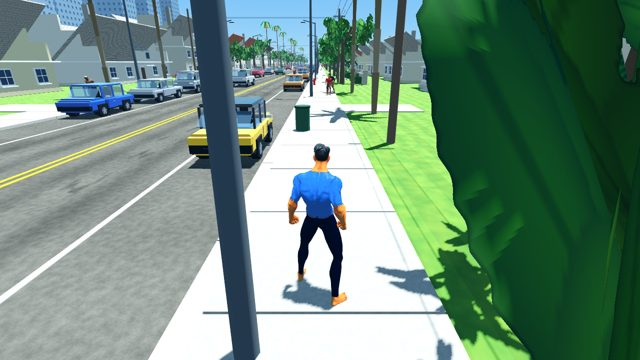
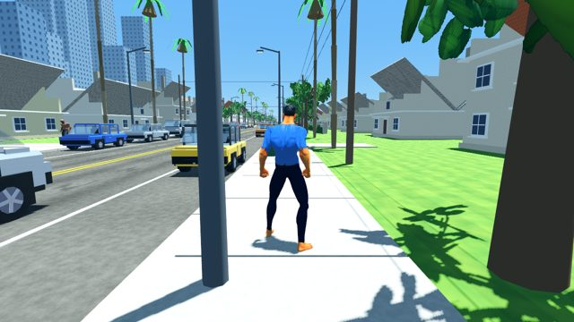
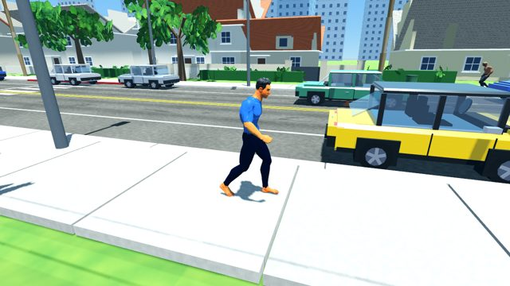
Beach · cloudy day
"a cloudy day on the beach, a thick grey cloud deck with a few brighter breaks, soft shadowless light over the sea"
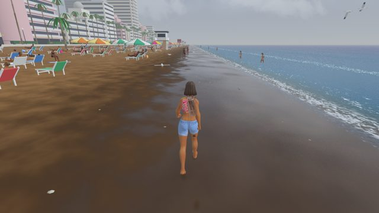
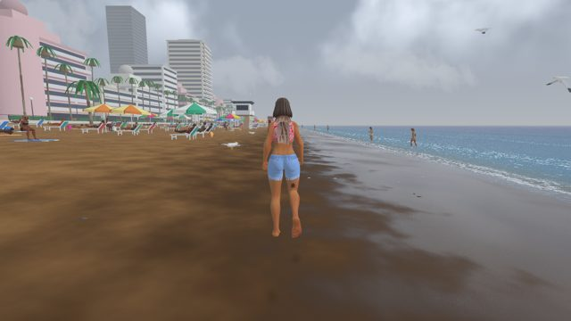
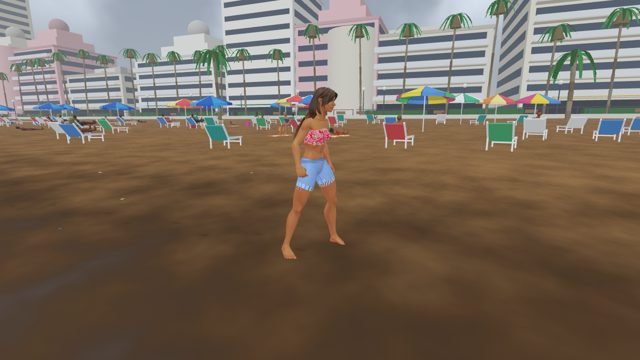
Street · overcast drizzly morning
"an overcast, drizzly-looking morning on the street, flat grey light, sun hidden"
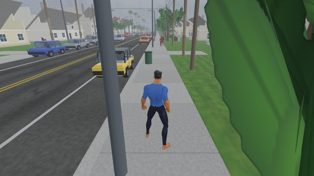
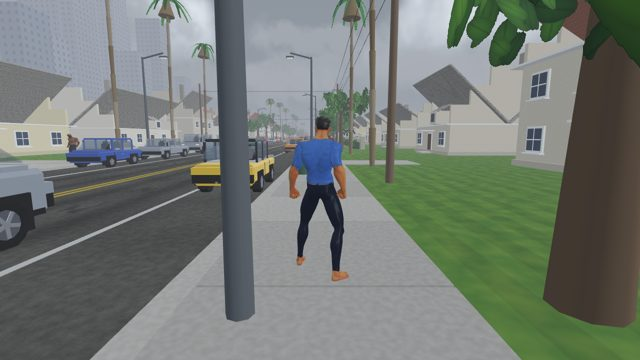
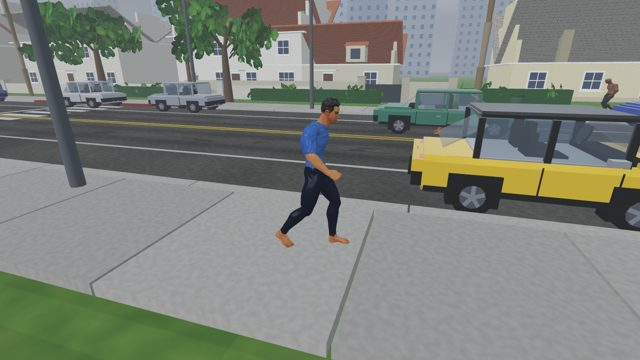
Beach · clear tropical noon
"a clear tropical noon on the beach with a few small cumulus far out over the sea"
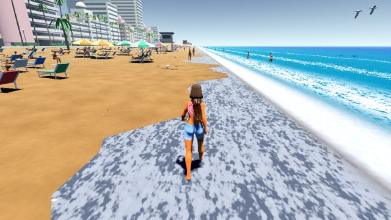
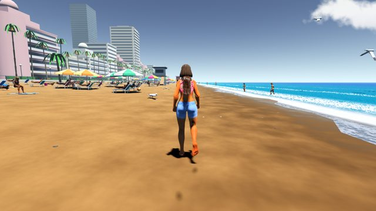
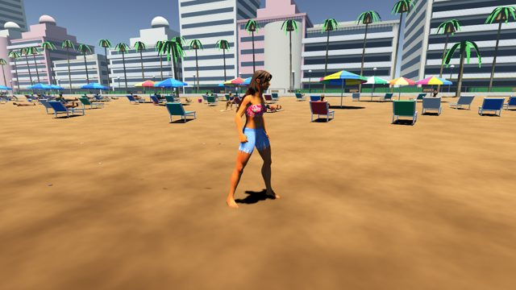
Beach · dusk, magenta band
"dusk on the beach, sun just at the horizon over the sea, magenta band, long shadows"
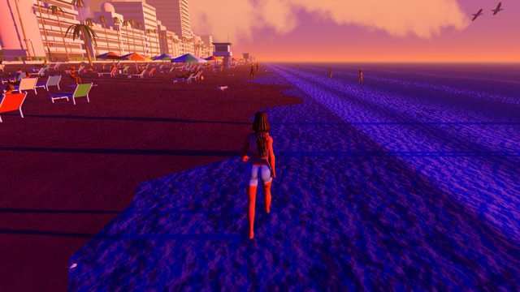
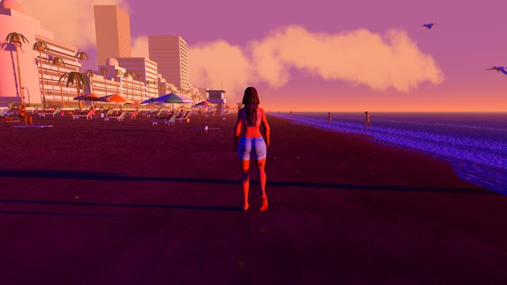
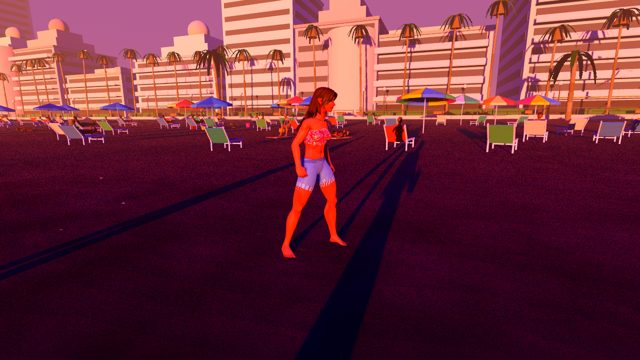